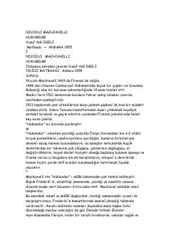

HHokimiyatni qo'lga kiritish va saqlab qolish bo'yicha mashhur siyosiy qo'llanma.
Niccolò Machiavelli tomonidan yozilgan ushbu asar siyosiy hokimiyatni qo'lga kiritish va uni saqlab qolish usullarini tahlil qiladi. Muallif davlat boshqaruvi, hukmdorning xulq-atvori va siyosiy strategiyalar haqida o'z davri voqeliklariga asoslangan pragmatik qarashlarini bayon etadi.